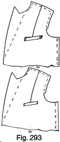
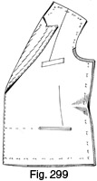
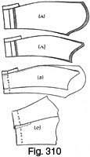

Early 1940's—Ladies' Garment Cutting and Making
by
F. R. Morris
Chapter XIX—Practical Tailoring
THERE are so many different ideas on the correct methods of making a tailored costume jacket or long coat that it would be impossible to generalize and not disagree with many people. In tailoring as in cutting, there are the advocates of plenty of manipulation and working-up of the garment to secure the required effect, while, in the wholesale trade, such expensive work is cut right out of the production side, and garments are produced in great numbers with a clean-finished appearance much to be admired. Too often, owing to the constant pulling and manipulating it receives, a well-cut garment seems to have lost a lot of its "life" when finally finished. This is not to be wondered at, for there probably has been a number of "fiddling" alterations and fittings with the result that the garment bears no resemblance to the original cut when finally sent to the client. The author believes that every garment should be cut as perfectly as possible at the first cutting and made with the minimum of delay, and then we have a really smart and clean-looking garment. It is the speed of the wholesale trade in turning out the garments that retains their original smartness of cut; there is none of the hanging-up on the hanger until the client condescends to call for the frequent fitting, with the consequent stretching of the shoulders and scye out of shape.
The price question is another most important factor to be considered, for no one but a philanthropist would put into a garment work that is not paid for, and a lot of the laboured tailoring that tradition compels us to insert into every garment before we can call it "tailored" can be dispensed with and the fit and style considerably unproved. Women these days are quick to note fashion changes and usually desire garments in the latest cut, and why ladies' tailors should still persist in putting enough work into a garment for a possible four or so years is on the face of it a mystery. A costume these days shows a variation of style every six months to a year, whether it is in the jacket or skirt length, size and shape of the lapels or the hem width of the skirt, and we should make our garment to last as long as the cut will remain modern and, in doing so, avoid some of the time-taking tailoring.
The question of canvas and padding is a sore point with many tailors. They cannot visualize a lady's coat made up without padding or canvas through the fronts, and if they get a young woman in the shop who wants a light-weight coat for summer wear, they still insert the usual quota of "French canvas." Canvas can be eliminated in the majority of the more "dressy" or "town" coats, and retained only in strictly tailored garments with definitely stereotyped lapels and collars where it is fundamentally necessary for the retention of shape.
In this chapter on practical tailoring the author endeavours to illustrate the accepted methods of tailoring he uses for garments and, in addition, explains how to make a garment throughout by machine as in the wholesale trade. The general procedure may be different from other ideas, but the ultimate result and the practicability of the methods used are their own recommendation.
Previously, the author has described the allowances for inlays and cutting from the material, and we can go straight on with the making. For an example of tailoring methods, the double-breasted costume jacket, with a panel back and plain fronts with shoulder and waist darts, has been chosen. Two cross jeatted hip pockets are indicated with a welt breast pocket. The edges are plain, and the coat is lined throughout.
 Cutting the Linings (Fig. 280)
Cutting the Linings (Fig. 280)

It is always better to cut the coat linings at the same time as the actual garment to save unnecessary ripping out after the fitting. If the coat fits perfectly without any alterations, it is a waste of time to rip the seams in order to cut the linings; therefore, the author always cuts linings and canvas from the garment and makes any alterations when re-marking the coat.
When cutting the linings it must be remembered that the outer cloth will stretch, while the linings will not; so it is advisable to cut the linings to fit slightly easier. Whether or not the garment is to be made throughout by machine will also affect the cut of the linings, but for the present description we will work on better-class methods of making.
To cut the linings, refer to Fig. 280, which shows the back, side panel, and sleeves with inlay allowances as described in the section on the Provision for Inlays.
Fig. 280 (a) shows the back panel, and the lining for the latter is cut exactly to the same length at the neck and the bottom edge with the identical ½ inch inlay allowed at the back neck curve. From the back neck point add about ¼ inch to the panel seam on the shoulders, as shown by the shaded lines, and continue the addition down the panel seam to the waist level; from this point the linings follow the run of the outside cloth.
It is advisable to cut the linings to the inlay length of the back in case the jacket length requires any adjustment. In a machined coat this cannot be done, for the linings are machined in with the inlay at the bottom edge and must be cut to the exact length plus seam allowances. Mark the back neck inlay by tracing through from the jacket back and notch the waist balance marks.
Fig. 280 (b) shows the side panel, and from this the linings are cut identical with the run of the panel back seam and with the same inlay allowance and to the length of the panel at the bottom edge. Across the shoulder seam, add ¼ inch to the length to agree with the addition made on the back panel lining, and gradually increase this quantity to ½ inch at the shoulder end. Allow ½ inch round the back scye as indicated by the shaded lines and about ¼ inch down the sideseams from the scye to the bottom edge.
Trace the panel inlay through on to the lining from the outer panel and notch the waist-line balance marks.
Fig. 280 (c) shows the top-sleeve with a lowered hindarm seam and a false forearm at the front. When the sleeve linings are being cut, the addition of ¾ inch made on the forearm is disregarded owing to the non-elastic nature of the lining material, for a certain amount of stretching is necessary at the forearm seam with this cut to make the seams lie flat when they are sewn together. It is impossible to stretch linings to the same extent as the cloth, so that the top-sleeve lining is cut to take the shape of a plain equal-width sleeve. This is shown on the draft by the dash lines down the forearm. Cut the lining to the turn-up length at the cuff and ¾ inch longer than the sleeve length at the sleeve head, and add about 3/8 inch at each seam to the total width across the sleeve head of the linings as shown by the dash lines and shading.
Fig. 280 (d) illustrates the cutting of the under-sleeve lining. On the draft ¾ inch is added to the width of the sleeve lining all down the sleeve to make up for the reduction from the top-sleeve width as described previously. Add ¾ inch to the full lining length as marked and spring out the sideseams of the lining 3/8 inch each side of the sleeve head. The lining is cut to the inlay length at the cuff edge.
The Cutting of the Forepart Lining and the Facing (Fig. 281)
Fig. 281 illustrates the forepart with the usual inlays added throughout. The facing must be very carefully cut to the shape of the neck gorge from the front neck point to the crease line, and then it is sprung out a bare ¼ inch to the peak commencement. Round the peak of the lapel, add about ½ inch as shown for working on to the lapel point in making, continue this ½-inch allowance all down the lapel to the first button position and finish of the lapel shape. From the end of the lapel to the bottom edge, mark the facing identically in shape with that of the garment, and then make the width about 5 inches at the bottom edge, increasing to the shoulder to finish at the front seam of the dart, and add the same inlay to the facing as that added to the forepart. The lining is cut to the full length of the garment at the bottom edge, and then from the shoulder seam it is marked to commence at two seams in advance of the back dart seam to allow for seams in making, as no seams are allowed on the shoulder dart of the coat. At the termination of the shoulder dart of the coat, overlap the lining over the facing by ½ inch for two seams, as indicated by the shaded and dash lines.
At the sideseam, cut the lining equal to the outside from the bottom edge to the waist, and then add about 3/8 inch of extra width over the breast line.
Round the scye, add ½ inch of extra width to agree with the addition made to the back lining at this part, and then mark the shoulders with 3/8 inch increased length as indicated by the shaded lines and dash inlay mark from the shoulder dart to the shoulder end. This addition to the back and front linings is for ease and to allow for a small shoulder pad.
Mark the inlays by tracing through from the outside and mark the waist dart.
Very often the linings may be cut without the shoulder dart being taken out, and the surplus is pleated over to provide for more ease over the bust prominence.
Marking Up (Fig. 282)
After cutting out the linings, the next operation is to tack-mark all the inlays. This is done in the usual manner with double basting cotton, and, by taking wide tacking stitches, mark up all the inlays and then cut through each tack loop. Next, by separating the material just sufficiently to enable the loops to be snipped through between the two cloth layers so as to make a tacking mark on each layer, complete the marking-up process. The shoulder dart may be either sewn out in the marks or cut down one side and then sewn out as an inlay. In the latter event, cut a ¼-inch seam inside the chalk marks at the front mark, and then mark up the back dart seam ¼ inch inside the chalk mark as indicated. When the dart is sewn out the edge of the front seam goes to the marking thread and is sewn a seam inside to agree with the original shoulder dart marking.
Mark up the pocket ends by crossing marking threads and the centre line by a few marks to give a balance when the garment is fitted.
The Canvas (Fig. 283)
All strictly tailored jackets and long coats should have an interlining of canvas through the fronts to give a firm foundation and retain the shape of the shoulders and lapels. The canvas should be cut to the shape of the shoulders and shoulder dart, and roughly to the shape of the lapels, so that they may be trimmed up when they are tacked to the coat. A seam should be run from the termination of the bust dart to the side edge of the canvas at the waist, and about ½ inch taken out to provide for waist and breast shape in the canvas foundation.
The section of the canvas which forms the scye interlining should be cut on the bias of the material, to allow for stretching at the front of the armhole over the prominence of the shoulder bone.
Cut the canvas wide enough at the pocket level to allow for the pocket-mouth tack, and then taper back towards the fronts at the hem.
A seam should be allowed each side of the shoulder dart when cutting from the canvas, and the two sections overlapped and stitched through instead of seamed out.
Inserting the Pockets (Fig. 284)
Having marked up the garment completely, we can now commence to insert the pockets. For the style chosen, the necessary pockets are two jeatted side pockets and one welt breast pocket to allow for a variation of procedure.
The jeatted pockets each has a facing at the top and bottom and a backing of the same material to cover the pocketing. Each facing should be cut at least ¾ inch longer at each side than the pocket opening length and 1¼ inches in width as indicated by Figs. 284 (a) and (b). These pieces are cut on the double to make four single facings in all. The facing which forms the backing to the pocketing is cut approximately twice as wide as the top and bottom facings, as indicated by Fig. 284 (c), since it has to equal the height of the top facing above the pocket opening and the depth of the bottom facing below the pocket mouth.
The pocket is usually made of silesia pocketing and is cut to the required length or depth less the width of the pocket facing; in any case, it is usual to trim up the depth before machining round.
To machine the facings of the pocket mouth to the pocket, take the bottom facings, separate the two sections and, by laying the right side of the facing to the right side of the pocketing, machine across as shown by Fig. 284 (e). The bottom edge of the facing goes to the top edge of the pocketing; it is important to remember this point when the pockets are curved or placed on the slant.
After machining the facing to the pocketing, press over the seams to overlap the pocket over the facing for a thin edge, and then edge-stitch through as indicated on Fig. 284 (f).
Make up the other front pocket section as described and then make the pocket backing section.
Take the back facings, separate the two sections, then lay the right side of the facing to the right side of the pocketing and machine across the top edge as indicated in Fig. 284 (g).
Press the seams of the pocket and facing downwards and then machine overlap the pocketing over the facing by edge-stitching as in Fig. 284 (h).
This completes the preliminary work for inserting the pockets, and now we commence work on the coat.
Fig. 285
The waist dart should be seamed out before the pockets are inserted. After this has been done, on the wrong side of the material, baste a 1¼-inch strip of linen across the coat from the centre front to the sideseam to cover the pocket mouth equally and form a stay for the pocket jeattings. This is shown by Fig. 285 (a), and the waist dart is indicated cut through so as to be pressed out flat.
On the right side of the fronts, mark the pocket mouth by a plain chalk line, and then tack the bottom facing and pocket with the edge of the facing to the pocket opening line and the right side of the pocket and facing to the right side of the fronts. Baste securely in position, overlapping each end of the pocket mouth by a quantity of ¾ inch to allow for machining round the edges of the pocket.
The top facing is then basted to meet the edge of the bottom facing and pocket mouth line, with the right side of the facing against the right side of the fronts. Mark the termination of the pocket opening clearly in chalk as a guide for machining, and then machine along the top and bottom of the pocket mouth opening on the facings a distance of ¼ inch or a narrow seam inside the line. Do not machine across the ends of the facings, but finish off each line of machining securely as in Fig. 285 (b).
After machining the facings to the fronts, cut through the pocket opening to within ½ inch of the ends of the opening, and then cut diagonally across the facings to the machine stitches as indicated, leaving a "lip" at each end of the pocket mouth.
After cutting across the pocket-mouth opening, turn the forepart over to the inside, and then press open the seams where the facings are sewn to the coat. When the seams at the top and bottom of the pocket opening have been pressed open, pull the top facing through the opening and turn back inside to the width of the jeatting required, which is equal to the width of the seam of the facing after being pressed open.
Before basting down the top facing inside, turn back the two "lips" at each end of the pocket and tack securely down on the inside so as to make a clean termination to the jeattings on the pocket opening.
Baste down the top facing from one end of the pocket opening to the other, making sure that the width of the jeatting is equal all the way along on the outside. Do not baste past the ends of the opening as the pocket must be sewn close to these points.
At the bottom edge of the pocket opening, press open the seam of the facing to the coat and then pull the facing and pocket through to the inside of the coat. Fold the facing and pocket back until the outside jeatting is the same in width as the top jeatting, and then baste along the facing to keep it securely in position, taking care not to tack past the ends of the pocket opening. After the top and bottom facings are basted down, the pocket opening on the outside should be completely filled by the jeatting edges, and the width of the jeattings should be equal to the width of the seams taken out when the facings are sewn to the coat.
Fig. 286
After basting down the bottom facing, the next operation is to machine-tack the facing through from the outside. This is done by machining exactly in the seam line of the jeatting so as to hide the machine stitching, from one end of the pocket opening to the other as indicated by the machine-stitching marks in Fig. 286 (a).
The pocket should be trimmed to the correct length to within ½ inch of the bottom edge line, and then the pocket can be finished.
The backing facing and pocket section are then basted down to cover the top and bottom facings as shown in Fig. 286 (b), and the pocket length trimmed to agree with the length of the under-pocket section.
To complete the inside work on the jeatted pocket, rip out the tacking threads which hold the two corner "lips" in position, and then machine all round the pocket from one side of the facings to the other, catching in the corner "lips." Stitch as close as possible to the end of the pocket mouth and trim all surplus pocketing away after machining.
Fig. 287.
Before the pocket can be machine-tacked across the top jeatting to hold the back and front facings together, it is necessary to have the canvas tacked in the forepart so that the machine-tack has a "stay."
To tack in the canvas, lay the canvas flat on the board, then place the forepart over the canvas and work back from the front edge to the sideseam. Baste down from the shoulder at the front neck point to the first button position, following the crease line of the lapels, and then continue tacking the outside to the canvas from this point to the bottom edge and across the bottom to the side of the canvas, making sure that the canvas is not short in length from the shoulder seam to the bottom edge. After this operation, baste down the shoulder dart to the waist, following the shape of the forepart by basting over the hand or a shaped board, and then continue from the seam of the canvas at the waist down to the bottom edge to meet the tacking thread from the fronts. Complete the tacking of the canvas by basting from the waist seam to the front of the armhole and round the scye to the shoulder seam as in Fig. 287.
When the canvas has been inserted, turn the forepart over to the right side and then machine-tack the top facing of the pocket down on the canvas and to a linen stay from the back end of the pocket opening to the sideseam as indicated in Fig. 287 by the stitching marks. The stitching should be done very carefully between the jeatting and the forepart in the jeatting seam to be hidden from view.
At each end of the pocket opening, make a "V" tack by invisible stitching to appear as shown in Fig. 287. The inside top and backing facings may be "serged" together after being trimmed down as much as possible for thinness.
Fig. 288
Fig. 288 illustrates how the jeatted pocket appears when finished, with narrow jeattings and "V" tacks at each end of the opening. To make a smart finish to the pocket and also one which women invariably prefer, place a "sprat's head" at each corner of the pocket opening. Full directions on how to make this decorative stitching will be found in Chapter XXI. Fig. 288 also indicates the line of the breast dart from the hip point diagonally to the bust prominence, which gives extra length at the sideseam in the waist to enable the garment to follow round the natural curves of the figure without distortion or fullness at the wrong places.
The other side of the coat has a jeatted pocket inserted in the same manner.
Welt Pockets
After the bottom pockets have been inserted, we turn our attention to the top breast pocket. This is invariably placed on the left side of the garment for women's as for gentlemen's garments and made about 3½ to 4 inches in length. This pocket is simply for show purposes so that it need not be too extreme in length or width of the welt.
The top breast pocket is inserted before the canvas has been tacked into the fronts, so that we must retrace our steps for this purpose. The first operation is the machining out of the shoulder dart. Indicated in Fig. 289 (a), we have the inside of the left forepart with the welt pocket marked and the shoulder dart cut through down the front and tack-marked at the back. Fold the shoulder over as indicated by Fig. 289 (b), place the front seam of the shoulder dart to the tack marks, and then machine down the shoulder dart from the shoulder seam to taper away gradually on the breast.
Carefully press open the shoulder dart, then turn the forepart over to the outside and mark the pocket to the required length and position, as in Fig. 290 (a).
For a welt pocket it is necessary to cut a welt and a backing facing for the inside to prevent the pocketing showing. Each of these facings should be cut on the right side of the material to match the coat and at the correct slanting angle.
Fig. 290 (b) illustrates the welt. This is cut to the length of the pocket opening plus about ½ inch to ¾ inch at each end for making purposes, and about 1 inch wider than the required welt width. The backing facing is cut in the same manner as the welt part and to the same width and length.
Fig. 290 (d) shows the pocket front which sews to the welt. As shown on the draft, the wrong side of the material is illustrated to allow the right side of the material to be inside the pocket in wear. Cut the pocket to the width of the welt and about 5 inches in length. The back of the pocket is cut about 1 inch shorter as shown by the dash lines in Fig. 290 (d), with the right side of the material to the right side of the front part.
Inserting the Welt Pocket
Commence by sewing the backing facing to the pocket back as illustrated by Fig. 290 (e) with the right side of the facing to the right side of the pocketing, making sure that when the facing is pressed back the sides of the facing and pocket are a continuous run. Press the facing and pocketing seam downwards, and then edge-stitch the two sections through as indicated in Fig. 290 (f).
The right side of the welt is then sewn to the right side of the pocketing as illustrated by Fig. 290 (g), so that when the welt is in position on the coat and the top edge turns back with the pocketing, the pocket will be in alignment vertically with the welt. Machine-stitch across the edge of the two sections, then press the seams downwards over the pocket, and edge-stitch through the welt and pocketing as indicated in Fig. 290 (h).
A 1¼-inch strip of linen should be tacked across the pocket mouth under the fronts from the scye for a pocket stay, and then we can proceed with the next step in the insertion of the welt pocket.
Fig. 291
Fig. 291 (a) illustrates the next process in the making. The backing facing is tacked to the line of the welt as indicated, with the right side of the pocketing and facing to the right side of the material, about ¾ inch being allowed at each end of the pocket opening. The right side of the welt and front pocketing is then tacked against the line of the pocket as indicated with the wrong side of the welt, etc., uppermost. Mark the pocket ends clearly with chalk and then baste a thin strip of linen across the welt to the width of the welt required when finished.
Machine through welt and facing to each end of the pocket opening as shown by the stitch marks, then cut through the pocket line to within ½ inch of each end, and "V" notch the forepart and the backing facing to the stitching lines as indicated. Do not "V" notch the welt as this makes it difficult for turning in the ends and tacking.
When this has been completed, turn to the inside of the forepart, press open the backing facing and forepart seam, and pull the pocket through from the outside to the inside of the fronts. This is illustrated by Fig. 291 (b).
Fig. 292
The welt should then be marked to the width required as in Fig. 292 (a) and the seam of the welt and fronts pressed open to allow for the welt to be turned back and upwards on the fronts. When the welt has been turned back, fold in the width line and then pull the pocket through from the outside to the inside. It will be found necessary to trim the width of the pocketing to pass the width of the opening in a "V" wedge as illustrated by Fig. 292 (b), which shows the front part of the pocket underneath the backing section.
Carefully tack the front and back of the pocket together, making sure that there are no drags from any point, then machine round the pocket from the side of the opening round the bottom edge to the other side, and trim away any surplus pocketing. This completes the work on the inside of the forepart, and the canvas should be tacked to the fronts. In practice, all the inside work on the pockets is completed before the canvases are tacked in, and then the outside work of tacking the pockets is completed.
In dealing with pockets, each must be described in detail, and it is necessary to give a complete description of one kind of pocket before proceeding with another type.
Fig. 293
To continue with the description of the welt pocket, trim the length at each end of the pocket opening to within ½ inch of the end, and then carefully cut away at the inside of the welt any superfluous material in the shape of linen or pocketing so as to make a thin welt finish as in Fig. 293 (a).
Mark the exact length of the welt, and then turn in each end and inside tack to the fronts by hand or by machine. This is done by back-stitching or machine-stitching the turned-in end of the welt from the inside of the pocket opening through the fronts and canvas as near to the end of the welt as possible. Cut away the surplus length of the welt after tacking each end, and then baste down the welt and hand-tack outside at each end as illustrated by Fig. 293 (b).
Welts are perhaps the most difficult of all pockets to make, as a lot of care must be taken in accurately marking in the width, turning in each end and tacking inside. All surplus material inside the end of the welt should be cut away before the turning-in, and it is advisable to back-stitch the ends of the welt neatly for firmness and ease in making.
Making the Back Part and Sewing the Panel Seams (Fig. 294)
After making the pockets and tacking the canvases to the fronts, the next operation is making the back part. The inlay on the side back panel should be marked up. The right side of the centre back panel is laid against the right side of the material of the side panel with the seam edge of the back panel against the inlay tacking threads of the side panel. It is then basted down from the shoulder seam to the bottom edge, care being taken to keep the waist and hip balance notches level and in alignment. The draft shows only one half of the back panel; the other side is treated in the same manner. Machine down the panel seam as indicated, and then either press open the seam as for a plain seam or press the two seams, inlay seam and single seam, towards the centre back to enable the outside stitching to lap the back over the side panel. For tailored costume jackets, the usual procedure is to edge-stitch the seams if they are not to be made plain; usually, only for sportswear jackets are the seams stitched wider than on the edge.
The shape of the back part after the panel seam has been pressed open illustrates the increased length created at the sideseam by the suppression at the side back waist.
The back and fronts are now ready for the linings, and the making of these is the next operation in the procedure.
Making the Linings for Back and Foreparts (Fig. 295)
All inlays on the linings should either be marked up with basting threads or traced through with a tracing wheel before machining is commenced. The waist dart or any darts are first sewn out in the marks and not cut through as in the coat, and then the right side of the facing is tacked to the right side of the lining and machined down from the shoulder to the bottom edge and vice versa for the left facing. The lining should always be underneath during machining to prevent the facing from creeping up under the machine and causing a tight lining when finished. Unless the machinist is very experienced, it is advisable always to pin or tack linings, for the sheen on the face of the linings always tends to slip on the smooth surface of cloth.
While on the subject of tacking, it is difficult to understand why tailors do not take a leaf out of dressmakers' books and use more pins in their work. It indicates a stubborn attitude to look upon pins as suitable only for the dressmaker's use. It is a frequent occurrence to see a young worker, who has been taught by strict tailoring methods, try to insert a sleeve into a coat with correct balance and distribution of fullness round the scye. Very often the sleeve has to come out one or two times as perhaps the fullness may be too high, at other times too low; more often than not, one sleeve is pitched from ½ inch to ¾ inch more or less than the other, and neither is correct. Too well have we heard the instructions to " ease the fullness gradually into the scye over the shoulder bone," and our shoulder bones are anywhere from down at the bottom of the armhole to round opposite the blades, judging from where the fullness is basted! A few pins materially assist the putting in of a sleeve as all good dressmakers know. If we watch a dressmaker put a sleeve into a dress or coat we see that the sleeve is pinned into the correct hang and balance while the coat is on the stand before it is tacked in finally, the possibility of a badly balanced sleeve with misplaced sleeve head fullness thus being avoided. Contrast the usual method of the tailor-taught worker. He or she marks the front pitch if it has not already been marked by the cutter, tacks the front seam of the sleeve to the front pitch and the back seam of the sleeve to the back pitch, and then works round the sleeve from the front seam round the front of the scye to the back pitch, easing in the fullness of the sleeve by judgment. If there is too much fullness when the proximity of the back pitch is reached, the sleeve is taken out and the operation started again, and maybe the back pitch is lowered to allow for more top-scye circumference. Finally the sleeve is basted in, and then, and not before, does the worker inspect the hang of the sleeve. It may be correct or it may not, but the point is that the balance of a sleeve should not be found by trial and error methods, but should be determined before the tacking stage.
This brings us back to the reason for this digression, the use of pins as an aid to good work, a point which cannot be overstressed. Tacking threads are very well in their way, but pins can simplify the work of basting seams, for all materials work up over the ringers when they are being tacked if care is not exercised, and a few pins down a seam before the tacking is commenced prevent this danger.
The back linings are machined up with the edge of the back panel lining against the traced inlay mark of the side panel section and then pressed open. When machining see that the two linings are tacked together perfectly flat to prevent any distortion of the seams when the linings are in the coat.
The Back and Foreparts Ready for Joining Together (Fig. 296)
Fig. 296 illustrates a view of the back and foreparts from the inside after the canvas has been inserted and the pockets tacked down. The back part shows the panel seam pressed open and the creation of side-seam length by back waist suppression. Before the back is joined to the foreparts, the latter may be lined and also the back linings tacked in. For a coat of this type of making, the sideseam and shoulder seams of the lining are usually felled instead of machined, to ensure a good-fitting lining and to allow for the front facing to be caught down to the canvas in order to prevent any rolling back of the edges, a fault common to tailored coats with sewn-on facings.
The next operation is the padding of the lapels and the sewing of a linen stay-tape down the crease line of the lapels and down the front edge to give it a thin finish.
Padding the Lapels, etc. (Fig. 297)
The linen bridle down the crease line of the lapels is the first thing to tackle. Mark the crease line of the lapel on the canvas, and then cut a strip of linen about 1¼ inches in width and approximately 2 inches longer than the crease line so that it can be carried up on to the collar. Commence to tack the linen down the crease line of the lapel from the gorge to the fronts, and slightly draw in the fronts under the linen from the gorge to about half-way down the crease line, as in Fig. 297 (a). Do not draw in more than about 3/8 inch in all, as the neck point is sufficiently straight and enough contour shape is infused into the garment over the breast without unnecessary manipulation. The front edge linen is shown in Fig. 297 (b) before the stay down the crease line. In practice the lapels are pad-stitched to obtain the desired quantity of fullness in the canvas, and then the edge of the canvas is pared back about ¾ inch and the linen added to the edge for thinness. To continue, cut away about ½ inch from the canvas at the edge of the lapels and about ¾ inch down the fronts below the termination of the lapels, and then commence to pad-stitch the lapels.
Commencing about ½ inch below the gorge run, insert the needle, just catch up the material and canvas, and make a series of such stitches down the linen stay, each stitch being about ¾ inch to 1 inch apart, and not on any account being taken untidily through the cloth to show on the outside. Do not pad-stitch to the end of the crease-line linen stay until the edge stay is in position. When the finish of the crease-line stay in a downward direction is reached, work back up the stay to the gorge, taking the stitches closely to the first row. Continue pad-stitching up and down the lapel until the whole lapel is covered, and then tack the edge stay in position as indicated in Fig. 297 (c) and (d) showing the lapel edge stay continued down the front edge.
Above the top button position, pad-stitch the linen stay to the lapel and, from the button position downwards to the bottom edge, serge the linen to the canvas without taking the stitches through the material, and also catch the edge of the linen to the material at the extreme front edge. Continue the front edge stay linen across the bottom edge from the fronts for a distance of about 4 inches, the canvas having been first cut away underneath.
When pad-stitching the lapels, hold the coat with the hand curling the lapels back so that some length of canvas is worked in with the pad-stitching to retain the "curl" of the lapels in wear.
Putting on the Facing (Fig. 298)
After the lapels have been pad-stitched, the facing may be basted to the fronts and stitched round. As the methods of making described for this coat are based upon the "open coat" principle, that is, with the sideseams and the shoulders of the linings felled and not machined together, the fronts and back can be lined independently of each other and finally joined together afterwards. The coat facing has been cut with a suitable quantity of extra width for working on the lapels, so that it will not be necessary to estimate the required quantity of width for manipulation. It is always advisable to cut the facing as accurately as possible so that exactitude in working can be guaranteed.
To tack the facing to the fronts, commence to baste round the gorge from the shoulder with the gorge seam of the lining in an exact position with the gorge run of the fronts. Then smooth the facing over the fronts, with the right side of the facing to the right side of the fronts, until the front edge of the lining is level with the front edge of the coat. When this is correctly placed, baste down the crease line of the lapels, leaving the excess width of the facing in front of the lapel edge. The most careful basting is needed round the lapel points where length of the facing must be worked on to the lapel and also extra width. Baste up from the break of the gorge run, easing in facing length with the basting, and then baste down the edge of the lapel with a similar quantity of facing length infused. The edge of the facing should now be tacked level with the edge of the fronts, which will give a quantity of extra facing width between the creased-line tacking thread and the edge of the lapels, this extra width being worked over the lapels in the outside basting. Roughly baste down the front panel seam and down the side-seams from the armhole to keep the lining in position, then stitch round the facing and fronts from the point of the lapel to the bottom edge as marked, commencing the stitching directly below the gorge break as indicated by the "V" notch, and at the bottom edge below the inlay taper back the stitching diagonally from this point to the edge.
Turning Out the Foreparts (Fig. 299)
After machining round the edge of the coat, carefully pare away the edge until the seam is about ½ inch wide, and then rip out all the old tacking stitches. Turn the coat inside out, carefully turn out the lapel point by means of a stiletto or thin-edged shears, and then baste all round the edge of the coat, lapping the facing over the lapel to cover the seam. Below the break, baste the facing about 1/8 inch back inside the coat fronts. After the edge-basting, tack over the lapels from the edge to the crease line and work on a sufficient amount of width to give a "curl" to the lapel. Also make sure that the point of the lapel has sufficient material worked over so that the seams at each side are covered.
Inside Basting of the Foreparts (Fig. 300)
Fig. 300 illustrates the inside basting out of the coat fronts. Baste down the facing seam of the fronts as indicated, and then catch the facing down inside the coat to the canvas. Baste round the scye and the shoulders and down the sideseam to the bottom edge as indicated, about 1½ inches inside the inlay mark, easing in about ½ inch to ¾ inch of lining length from the scye to the bottom edge.
Fig. 301
Fig. 301 shows the back part with the lining basted in. Ease about ½ inch to ¾ inch of lining length when basting down the seams.
Joining the Back to the Foreparts
To join the back to the fronts, place the edge of the back sideseam against the inlay mark down the front sideseam, baste down from the scye to the bottom edge level, and machine a ¼ inch seam inside the edge of the back. Press open the sideseams and then tack the forepart lining down to each seam so that it lies flat towards the back. Turn in the back lining at the sideseams over the forepart lining and baste down for felling.
At the bottom edge, baste up the inlay to the marks and secure to the coat by catch-stitches, making sure that these are not taken through to the outside. Baste the lining through to the outside about 2 inches above the bottom edge, then pare away all surplus length, and turn up and tack down for felling.
Join the back and foreparts at the shoulders by basting the edge of the back shoulder seams to the inlay marks on the front shoulders, and machine across, making sure to commence the machining at the gorge inlay mark and not right through the shoulders to the end of the inlay. Press open the shoulder seam at each shoulder.
Collar Cutting and Making
The collar is made up separately before being sewn to the coat instead of the usual method of sewing the under-collar to the neck and then covering with the top-collar. The modern method is to cut the under-collar exactly to the right length and shape as required. The top-collar is sewn to the under-collar and basted out before the collar sees the actual coat neck. Very accurate cutting is necessary for this method, but in practice the benefit is great and results in a much cleaner finish to the collar and lapels.
Fig. 302 (a) shows the neck curve of the gorge after the shoulder seams have been sewn together. Check up the length of the collar by measuring round the neck curve a ¼-inch seam inside the inlay mark, and add ½ inch to this measurement when measuring round the sewing edge of the collar as indicated in Fig. 302 (b).
The top-collar is cut by the use of the under-collar outline, has ½ inch added round the fall edge to the collar end, and is tapered back to ¼ inch at the front sewing edge. This is illustrated by Fig. 302 (c).
The canvas interlining is cut on the bias as shown by Fig. 302 (d), with a seam down the centre back, and is laid so that the bias of the canvas runs the same way on both sides. Cut the canvas slightly larger than the under-collar to allow for working-up.
The crease line of the collar should be outlined with marking threads, and then the centre seams of the under-collar and canvas are sewn together and the canvas tacked to the under-collar.
The stand of the collar is machine-stitched to about ½ inch from the sewing edge of the under-collar, and about four lines of stitching are indicated. The canvas is then cut back about ¼ inch from the edge of the under-collar.
Pad-stitch the fall of the under-collar from the crease line to within ½ inch of the fall edge, as indicated by Fig. 302 (e), and, when this is done, cut the canvas back about ¼ inch from the fall edge so that it is not caught in with the collar seaming round the edge.
In pad-stitching the under-collar, work the canvas over the collar to obtain a "curl" to the fall, and well pad the ends of the fall especially.
When the collar has been padded all over, fold at the crease line and slightly shrink into a hollow shape as illustrated by Fig. 302 (f). Do not stretch the fall or stand edges intentionally, for it is more necessary to shrink the crease of the collar close to the neck than to stretch the fall edge to lie flat over the shoulders. One operation performs the other, but the correct method is to cut the collar to the correct length and then shrink in the crease.
Similarly, fold the top-collar in half as with the under-collar, and shrink by an amount equal to that by which the under-collar is shrunk. With the top-collar, it is advisable to stretch the fall edges slightly over the shoulder seam positions, as it is cut on the straight of the material and has not the "give" of the under-collar (see Fig. 302 (g)).
Baste the top-collar to the under-collar as illustrated by Fig. 302 (h), and ease in a slight amount of length at the collar end and round the fall edge as indicated. When the collars are basted together, machine round the fall edge from about ½ inch up from the sewing edge of the collar end at each side. Pull out all the tacking threads and baste out the collar. Baste round the edge, rolling the edge between the fingers for thinness, and then baste over the collar to the crease edge, making sure to work in plenty of extra material at the collar ends. The collar is now ready for sewing to the coat neck.
Commence by basting the centre back seam of the collar to the centre back seam of the coat. Baste the stand of the collar a seam inside or below the inlay marking threads round the back neck, and then pin the collar end to the end of the gorge at the peak of the lapel, with the stand overlapping the notched seam left round the gorge about ¼ inch to 3/8 inch. Baste the stand to the gorge ¼ inch below the inlay mark from the centre back to the collar after the length has been verified by tacking the two collar ends in position. A slight amount of ease in the collar is allowed over the shoulder seam point; otherwise, the shoulders may crease owing to the collar dragging the gorge back from the front as the fall edge requires length to cover the shoulder. After basting round the collar stand it is then advisable to fell round the stand edge before continuing with the top-collar, hand drawing so that a firm foundation is made for this operation. Fell the stand edge with neat stitches and, when this is completed, turn to the top-collar and pad-stitch the crease-line linen stay to the under-collar canvas in a continuation of the crease line.
Then turn the gorge edge back on the facing to the required amount and serge down on to the shoulder canvas from the point of the lapel to the shoulder seam. This must be done very carefully so as to obtain a straight seam to the collar when finished. Perform this operation on both sides of the gorge, and make sure to catch-stitch the canvas round the seam of the gorge at each side and also across the shoulders to the seams of the back and foreparts.
The sewing edge of the top-collar is now basted down against the gorge edge of the shoulder and lapel, and turned in by the correct amount to allow for a slight shortness between the collar seam and the gorge seam for the drawing operation.
With invisible stitches carefully draw the two edges of the collar and gorge seam together from the peak of the lapel to the shoulder seam at each side. Across the back neck from shoulder seam to shoulder seam, fell the top-collar stand neatly down over the back neck inlay.
The back lining may now be turned in and felled across the back neck above the collar stand, and, across the shoulders to the shoulder ends, the back lining is overlapped over the forepart linings and felled down. If shoulder pads are inserted on the shoulders, the lining must be adjusted and felled down after these have been inserted. After drawing the edges of the collar and gorge seams together, side-stitch invisibly across the stand of the top-collar to the under-collar and canvas to prevent the crease edge of the collar from shifting, and this completes the making and putting on of the collar.
The secret of this collar is accurate measurement of the coat gorge before cutting the collar to length; otherwise the whole of the collar making is much simpler and more accurate than the usual method of felling the under-collar to the coat first and then basting and turning out the top-collar. Now the collar is completed, the sleeves are the remaining job before the coat is ready for felling out and buttonholing.
 Making the Sleeves (Fig.
303)
Making the Sleeves (Fig.
303)

The sleeves are to have an opening at the hindarm and they are cut with an extension on the bottom inlay as illustrated in Fig. 303 (a) and (b).
To make the sleeves, first mark up all the inlays and then trace through the lining inlay at the under-sleeve hindarm seam from the outside.
Sew the forearm seam of the sleeve together first and then press open as in Fig. 303 (c). With a three-quarter sleeve the forearm seam should be well stretched in the hollow at the elbow before it is sewn to the under-sleeve; otherwise the under-sleeve seam will be longer than the forearm seam, and the sleeve will not lie flat when creased to the original forearm line, which is the natural creasing line of the sleeve.
Baste the cuff turn-up to the required sleeve length with the right side of the cuff inlay to the right side of the sleeve. Mark the length of the hindarm opening up from the cuff end at each hindarm seam, notch in ¼ inch or one seam width, and then machine down each seam as illustrated by Fig. 303 (d).
Remove the tacking threads, turn out the cuff, baste up as in Fig. 303 (e), and lightly catch-stitch the edge of the turn-up to the sleeve and at the seams.
Fold the sleeve over with the right sides of the material together (see Fig. 303 (f)), baste the forearm seam to the inlay mark on the hindarm seam, and then machine down the seam from the top of the sleeve to the hindarm opening notch.
Cut across the hindarm seam inlay at a point approximately ½ inch above the opening and then press open the hindarm seam as in Fig. 303 (g). Baste the hindarm opening and then turn the sleeve inside-out and make a hand tack to hold the opening in position. The tack may be made by invisible stitching or in the form of a button-hole stitch.
Machine up the linings in the usual manner and then, to line the sleeves, turn these inside out and baste the hindarm seam of the lining to the hindarm seam of the sleeve, allowing a little ease in the length and with the lining ¾ inch to 1 inch longer than the sleeve at the top. Turn out the sleeve and lining so that the lining is uppermost, and then trim the lining level with the cuff. For a sleeve with an opened cuff, turn the lining up and tack round over the sleeve inlay to show about 1 inch of cloth and, at the opening, taper the lining back to the opening commencement as indicated- by Fig. 303 (h).
Fell round the cuff linings and turn out the sleeves after basting the linings round the sleeve head at about 3 inches down from the sleeve crown to hold them while the sleeves are sewn to the armhole.
Inserting the Sleeve into the Scye (Fig. 304)
Basting and sewing the sleeves into the armholes are perhaps the most difficult operations for inexperienced workers to perform satisfactorily, and even experienced workers are sometimes at fault. The trouble lies in the hang of the sleeve in the scye and the distribution of sleeve-head fullness. These fundamentally important operations are subject to the personal feeling of the worker more than any other section of the making, and it is practically impossible for any worker to baste two sleeves into a garment and be sure that they are exact as regards hang and distribution of sleeve-head fullness. With fullness distribution governed by trial by error methods, it is not to be wondered that putting the sleeves into a garment is disliked by the majority of dressmakers and tailoresses. The remedy lies in a systematic distribution of the sleeve-head fullness by a system of balance notches on the sleeve to agree with identical points on the scye, so as to control the fullness in its correct proportion and position in the scye, and with assistance from pinning to ensure that both sleeves are of identical balance before they are finally basted and machined.
On the sleeve, after it has been lined, measure round the sleeve head from the hindarm seam to the crown the distance from the normal back pitch to the shoulder seam plus ½ inch for fullness, and make a balance notch on the crown as in Fig. 304 (a).
Then measure from the front pitch on the scye to the underarm seam and apply this quantity from the front pitch notch of the sleeve round the under-sleeve plus ¼ inch as illustrated by Fig. 304 (b).
To baste the sleeve into the scye, first baste the forearm seam notch to the front scye pitch. This should be done on the outside of the coat and with the seam of the sleeve hanging in the natural downward balance and not square out from the front scye pitch, otherwise the sleeve hang will not be satisfactory. The forearm sleeve notch should be placed about ¼ inch above the scye pitch so that, when the sleeve is sewn in, the reduction of a seam from the sleeve and the scye will bring the two pitches in alignment.
When this operation has been effected, turn to the inside of the garment and secure the hindarm sleeve seam to the scye notch, basting with the sleeve seam running downwards in the natural balance. Similarly with the front sleeve seam, the seam of the sleeve at the hindarm should be tacked just above the back-scye pitch so that, when the seam is taken off, both pitches will be above each other.
Pin the sleeve-head balance notch to the shoulder seam of the garment and the under-sleeve balance notch to the underseam. At the hindarm between the hindarm sleeve seam at the shoulder seam, pin the sleeve fullness into position with more fullness towards the shoulder than towards the hindarm point.
Round the front-scye from the shoulder seam to the front sleeve pitch, distribute the sleeve fullness with three pins into three parts as illustrated by Fig. 304 (c). For a distance of 1¼ inches from the front sleeve pitch position do not ease any fullness into the scye, but just baste in easily, and not tightly.
After the sleeves have been pinned and the balance of each checked up and found correct, baste round the sleeves in each scye and remove the pins. The right sleeve is basted from the front sleeve pitch round the under-scye to the shoulder seam and thence down the front of the scye, while the left sleeve is basted from the front pitch up the front of the scye to the shoulder and then down the back-scye and round the under-scye. The difference in the direction of the basting of the two sleeves is the primary cause of unequally balanced sleeves when basting in without distributing the fullness accurately with pins; for usually, when basting the left sleeve from the front sleeve pitch to the shoulder, there is a tendency to work the sleeve fullness too high in the scye and, conversely, when basting from the shoulder down to the front pitch, the sleeve fullness gets distributed too low in the scye. So it is always advisable to pin the fullness first and check each sleeve for balance before machining.
Carefully press away the sleeve fullness down over the crown of the sleeve, using a little water if the material is of an unyielding texture. Another aid to shrinking away the fullness is the use of a little soap on the seam. Always shrink the fullness before machining; otherwise the foot of the machine has a tendency to push the fullness out of place.
In machining the sleeve into the scye, first carefully make sure that the linings and canvas are clear from the machine, and then machine the right sleeve in the reverse direction to the way it was tacked, that is, round the front of the scye to the shoulder and thence to the under-scye and the front pitch. The left sleeve is sewn from the front of the scye round the under-scye to the shoulder and down the front of the scye in the reverse direction to that for basting. After machining the sleeves into the scye, take out all the basting tacks and carefully pare away all surplus material, leaving the sleeve and scye seams about 3/8 inch in width.
Most women's coats are improved by the addition of a small pad on the top of the shoulder point. The pad need not be very long or thick, but it certainly gives a well-fitting shoulder in comparison with the usual over-hanging shoulders on women's coats. Make the pad of double-ply wadding and shape as illustrated by Fig. 304 (d) to about 5 inches by 3 inches at the widest part. Tack together with silk, or baste and pare away the edges for thinness. The pad should be shaped in a curve to match the shape of the shoulder in the tacking together of the two layers of wadding.
A narrow strip of wadding is placed in the sleeve head between the seam of the scye downwards inside the sleeve to fill out the sleeve-head fullness. This strip of wadding should extend from about 1½ inches from the front sleeve pitch to the hindarm pitch, and is basted on the inside of the scye and sleeve seams to extend down the sleeve.
The shoulder pad is then tacked to the seam of the scye and sleeve in the following position: one-third of the length forward from the shoulder seam and two-thirds of the pad back from the seam down the back-scye. Tack the pad firmly in position with silk, and it may be caught down to the shoulder canvas on the front shoulder. The pad, incidentally, is placed between the canvas and the lining.
With the pads in position, the lining at the shoulders can be adjusted to cover the pads and then tacked over and felled. The lining is then tacked round the scye seams and any surplus width trimmed away, The cause of many tight armholes is due to the linings and canvas not being trimmed cleanly away from the scye seams. Make sure that the lining is not pulled out of position or tight in any place. Many tailors make a split in the lining over the shoulder point and cover it with a V-shaped piece of lining to allow the shoulder lining to open out over the prominent shoulder point.
The sleeve lining is then tacked round the scye to cover the tack stitches holding the linings and pads in position and felled down. Distribute the sleeve-head lining fullness to agree with the sleeve fullness to prevent tightness across the sleeve linings over the crown.
It is a fault with sleeve linings that they invariably come undone round the under-scye in wear, and a good plan is to back-stitch round the under-sleeve lining at about 1/8 inch in from the felling stitches.
The button-holes are the remaining item of the programme, and these should be made as described in Chapter XXI.
Making a Machine or Bagged Coat
With trade competition as it is to-day, the small tailor cannot always afford to make a garment with the same quality of workmanship as the better-class type when the price realized is not great. The wholesale houses cut down the cost of production in the making by the use of special machinery and the elimination of hand work, and the small tailor can benefit by a similar thorough examination of his work to find out where time is spent which can be saved by machine work without detriment to the finish of the garment. Of course, the first essential to the reduction of hand workmanship is accurate cutting to eliminate manipulation as much as possible. In the old days, the tailor had to work the garment up because the cutter could not visualize a garment cut to fit without all this stretching and drawing in, but the wholesale tailors have shown that it is possible to cut a garment to fit without the extreme manipulation tailors formerly infused into it. To a certain extent, the old-time cutter was in the hands of his workman, depending on him for assistance in making the garment fit, but these days the cutter endeavours to cut his job to fit without the worker's assistance; in other words, to eliminate the possibility of indifferent workmanship reacting on the garment. Also, it is not possible to obtain workers who understand manipulation these days, and, in any case, the prices for which garments must be produced do not permit a lot of time spent on unnecessary hand work. To adhere to hand workmanship as an example of keeping up the standard of tailoring is a fool's game if the only reward is loss of custom and meagre profits. In a high-class trade good workmanship is essential, but as the vast majority of ladies' tailors and dressmakers cannot command the prices paid at that end of the trade for costumes, coats or dresses, it is imperative that they possess the ability to make garments with a clean finish with the least expenditure of time on hand sewing.
The first essential towards the production of a machine-made garment is very accurate cutting and trimming; without this accuracy success cannot be guaranteed and the garment will look like an inferior machine production.
Inlays may be left as usual on both the lining and the outside, as these have no effect on the actual making, except that they are nipped to prevent tying of the seams.
For the machine-made example, a lounge style with a centre back seam and a gorge dart is chosen. The lapels are single-breasted and the fronts linked. Pockets are jeatted so that the same instructions as given in the previous tailoring example will apply. A sleeve with a dummy opened cuff is included for a variation from the plain opened style.
 The Cut-out Garment (Fig. 305)
The Cut-out Garment (Fig. 305)

Fig. 305 illustrates the cut-out garment ready for tack marking. No inlays are left round the back neck curve, shoulder seam and scye, and there are only a sideseam inlay and a bottom edge turn-up. Fig. 305 (a) shows the back with a centre seam added, while Fig. 305 (b) indicates the foreparts with an underarm dart and a waist dart at the front. Figs. 305 (c) and (d) show the top and under-sleeves with a bottom edge turn-up only.
Mark up all the inlays and the front waist dart by tacking stitches, and then proceed to cut the linings and facing as follows. Firstly, mark back from the edge of the lapel the desired length of the step opening, about 1¼ to 1½ inches plus ¼ inch, and then make a notch at this point to indicate where the collar end should terminate. Before the linings are cut, the gorge dart should be sewn out to obtain the actual size of the lapels for the facing shape.
At the bottom edge, make a chalk mark on the garment to where the bottom turn-up will turn back when finished. Mark this line of the back and foreparts, and then cut the back lining out as indicated by Fig. 306.
Cutting Out the Linings (Fig. 306)
For a distance of about 2 inches from the back neck curve cut the lining to the shape of the centre back-seam, and then add about ¾ inch out to allow for a lining pleat from this point to the waist level. From the waist level to the bottom edge cut the lining as the centre back seam. From the back neck curve add ¼ inch on the length upwards, and spring out to ½ inch on the shoulder end and round the back-scye to cover the shoulder-pad thickness.
From the top of the sideseam to the waist level taper the extra quantity from ½ inch to nothing at the waist, and continue down to the bottom edge as the side-seam shape.
The length of the lining is cut 1 inch longer than the chalk mark to which the bottom edge inlay turns back; ½ inch is allowed for two seams and about ½ inch for ease in the length.
On the forepart, cut the facing to the shape of the gorge run from the neck point to the end of the lapel, and add about ¼ inch on the length of the facing above the end of the lapel and ½ inch on the width down the lapel to taper away at the break of the crease line in the waist. Measure back from the end of the facing and make a balance notch for the collar equal to the length of the step plus ¼ inch.
On the shoulders, cut the facing about 2 inches in width and shape down the front to about 4½ inches in width at the bottom edge. The length of the facing should be ¾ inch longer than the chalk mark to which the bottom edge inlay turns back; ½ inch is for seams and ¼ inch for ease.
Cut the forepart lining to lap ½ inch over the facing down the fronts, and from ¾ inch at the facing and 1 inch at the sideseam longer than the inlay chalk mark, to agree with the length of the back lining. At the shoulder, add ½ inch to the lining on the shoulder end and round the scye to the sideseam, and spring out the sideseam lining at the breast line about ½ inch to taper back to nothing at the waist line.
The underarm dart should be cut out of the lining to agree with the outside, and the waist dart sewn out without cutting.
Cutting the Canvas
The canvas should be cut before the gorge dart is sewn out as the latter must be taken from, the canvas to give the same foundation shape as the outside. Cut the canvas about ¼ inch wider down the lapels to the break and thence as the shape of the front edge of the garment to the bottom edge inlay. Cut wide enough to cover the pocket opening and to take the tack, and mark out a ½ inch waist dart in the position indicated.
Another method of cutting the canvas in order to obtain more breast shape and spring over the shoulder prominence is illustrated in Fig. 306. A seam is run from the shoulder seam to the waist line and ½ inch reduced upwards from the waist and then on the shoulder, the scye section of the canvas being overlapped ½ inch to ¾ inch as shown by the draft. When the seams are sewn together, the scye edge of the canvas will have a certain amount of "spring" to allow for the prominence of the shoulder point. Allow a seam on each section when cutting this canvas.
Cutting the Top and Under-collars (Fig. 307)
The under-collar should be cut as described in the chapter on Collar Cutting with the following attention to detail as shown in Fig. 307 (a). Make sure that the length is a seam past the step balance notch. The width of the fall edge at the centre back seam should be 1¾ inches for a 1½-inch fall depth and the stand 1¼ inches for a finished depth of 1 inch. At the step end, make the width of the collar step equal to the required width plus two seams, 2 inches in all for a 1½-inch step.
The top-collar is cut ¼ inch longer than the under-collar and ½ inch wider round the fall edge as illustrated by the dash lines in Fig. 307 (b).
Every section of the garment must be cut to fit for perfection and ease of making, and this principle applies more to the collar and facing cutting than that of any other part of the garment. With every part accurately cut and fitted, the facing can be machined round without basting, though it is always advisable to spend the little extra time in tacking. The author has made coats and machined the facing on without basting, but it is not to be recommended.
 Making the Pockets and Foreparts
(Fig. 308)
Making the Pockets and Foreparts
(Fig. 308)

Firstly, seam the centre seam of the back as illustrated by Fig. 308 (a), press open the seam, and then insert the pockets into the foreparts as described in the previous tailoring example. Briefly described, the first operation is to baste linen across the pocket opening on the inside of the garment from the fronts to the sideseam, and then sew the bottom pocket to the bottom facing and tack the bottom and top pocket facings to the pocket opening on the outside of the garment. Machine across the facings to the length of opening required, then cut through the opening to within ½ inch of each end, and slash diagonally to each corner where the machine stitching finishes. Pull the top and bottom facings through the opening from the outside and press open the seams of the jeattings and the coat. Baste the jeattings to the correct width, tack the pocket backing section to the pocket opening, and stitch round after having first machine-tacked through the bottom jeatting to hold it in place. Turn to the outside of the garment and press the pocket into shape before tacking the top facing and backing to the canvas and sideseam stay.
A jeatted pocket should not take longer than ten minutes at the outside for an experienced worker to insert. The author once put in two side jeatted pockets in a shade over fourteen minutes when he was in a hurry, but this cannot be taken as a general rule.
Fig. 308 (b) illustrates the foreparts with pockets in and darts seamed and pressed, and now the canvas can be made and tacked to the fronts.
To eliminate a part of the hand work, the author always machines the linen edge stay to the canvases instead of by hand. This is a very good method and saves quite a lot of time. Cut ¾ inch from the canvases down the front edge from the step to the bottom edge and back from the step end to ¾ inch past the step balance notch as in Fig. 308 (c). Cut a strip of linen 1 inch in width and machine this to the edge of the canvas, with the linen on top and the canvas underneath on the machine, so that the linen is sewn on tightly to the canvas as in Fig. 308 (d). Press away the ease in the canvas, then baste the canvases to the fronts in the usual manner, and complete the tacking of the jeatted pockets, as shown in Fig. 308 (e).
Contrary to the previous tailoring methods described, the back is joined to the fronts before the linings are made and, to this end, machine the back to the forepart as illustrated by Fig. 308 (f) and press open the seams.
join the shoulder seams of the back and foreparts together, making sure to allow plenty of ease in the back shoulder seam when basting, and machine and press open.
The canvas should be caught down to the shoulder seams after they have been pressed open, and the coat is now ready for the under-collar to be sewn round the neck curve.
Making the Under-collar
The under-collar is made without hand-padding of the fall edge for a machine-made garment, as padding is wasteful of time to a great extent.
Cut the collar canvas on the bias in the usual manner, and then tack to the under-collar after the seams have been machined and pressed open.
Stitch the stand of the collar to within ½ inch of the fall sewing edge with four rows of stitching, and then pad the fall by diagonal machine stitching as illustrated by Fig. 308 (g). Fold the collar in half in the crease-line mark, shrink in the crease line as described previously and pare away the canvas from the fall edge to allow for the machine stitching round the edge.
Sew the under-collar to the neck curve by first tacking at the centre back seam and then checking up the length by basting each end of the collar one seam in advance of the step balance notch, so that when a seam is taken from the lapel and a seam from the collar end the step will be the required width. Baste the collar completely round the gorge, working from the centre back to each end and allowing a little ease in the gorge opposite the shoulder.
Machine round the collar from end to end, take out the tacking thread and press open the collar and gorge seams. Do not stitch past the balance notch of the step at each end.
Catch the canvas of the under-collar to the seam of the gorge all round the neck, and then mark the crease line on each forepart to run with the collar crease edge.
The crease-line stay of linen is basted on in the usual manner as illustrated by Fig. 308 (h) with a little drawing in of the material from the gorge downwards. Sometimes the linen stay is dispensed with and a narrow stay-tape machine-stitched down the crease line from the gorge to the first button position, but the better method is staying with linen.
Pad-stitch the lapels as usual by working from the crease line towards the lapel edge until completed, and then press away the length worked on to the lapels by the padding action.
Making the Linings
Trace through the inlay marks on to the lining from the outside and then machine down the centre back seam. The back lining is cut on the fold of the material for the pleat, so that it is not necessary to machine down this. Machine out the front darts and then join the facing by machining with the lining on top of the facing to prevent drawing in under the machine foot. Special care must be exercised to ensure that the linings and facing are of the same length at the bottom edge for sewing to the bottom edge inlay of the coat. Join up the sideseams and shoulder seams and press the seam over one way to hide the machine stitching.
The top-collar is slightly stretched at the fall edge and shrunk to the shape of the under-collar at the crease line, and then sewn round the neck curve of the lining. First, baste the centre of the collar to the centre seam of the lining, and then tack each collar end a seam in advance of the balance notch at the step. Completely tack the collar on the lining, and machine round the neck and press open the seam. Do not machine past the balance notches.
Lining the Coat (Fig. 309)
After all the seams have been pressed on the out-sides and linings, commence to tack the lining to the coat ready for machining round the edge.
Tack the collar seams together from one step end to the other round the neck curve, making sure that the seams are perfectly above each other, and separate the collar ends from the notched step. Baste round the collar fall edge, easing the top-collar to the under-collar up the step and for a small distance along the fall edge to the other end of the collar.
Baste the facing to the lapel from the notch of the step to the end of the step, easing the facing on to the lapel over this part, and then baste down the lapel edge, working a little ease in length of the facing on to the lapel for a distance of approximately 2 inches down from the step. Continue basting down to the end of the facing, and then baste the edge of the bottom inlay to the lining and facing edge from one side of the garment to the other.
Fig. 309 (a) illustrates the facing basted to the outside with details of the collar-end treatment and the sewing together of the facing and coat turn-up at the bottom-edge.
To machine on the facing, firstly machine across the bottom inlay seam and press open this seam before doing anything else. When the seam has been pressed open, tack from the inlay seam to the bottom edge of the fronts and machine up from the fold bottom edge to the notch of the step. Do not catch the collar in with this stitching but fasten off and then commence to machine round the collar by separating the collar end from the step and machining from the notch of the collar. When machining round the step of the lapel, make sure that the machine stitching runs in a perfect line with the seam of the collar and facing; otherwise there will be a break in the continuation of the collar seam to the end of the step when the facing is turned out. Continue down the opposite side of the garment after sewing round the collar. Make sure of fastening off the machining at the collar ends and the facing to ensure a perfect joining up of the collar and lapel at the step.
Take out all the basting stitches, trim the edge seams down to a minimum, and turn the coat out through the armhole. Carefully turn out the lapel corners and commence to baste round the edge of the coat from the left lapel round the collar to the right lapel and fronts. Completely baste round the fronts, turn the bottom edge up to the inlay marking threads, and baste along the bottom as illustrated by Fig. 309 (b). Baste over the collar, working on a quantity of length estimated by tacking the collar seams together and working the fullness upwards to the collar fall.
Baste over the lapels, working a length of facing over the corner of the step and rolling the lapel in the fingers from the edge to the crease line. When this has been completed, fold the lapel over to retain the facing length and then baste down the facing inside the coat on the facing and lining seam. Tack the sideseams of the lining to the coat sideseams, baste the centre seam of the lining to the centre seam of the outside, and tack the lining round each armhole at a distance of 2 inches or so from the edge.
Making the Sleeves (Figs. 310 and 311)
The sleeves are made with a dummy opened cuff and are cut with inlays at the hindarm seams on the top and under-sleeves for the opening as described in Chapter XVIII.
Fig. 310 (a) shows the cutting of the sleeve linings for machine-made sleeves. Mark the point to which the cuff inlay turns back on the sleeve and then cut the length of the lining two seams longer than the chalk mark. At the sleeve head, cut the lining ¾ inch longer and about 3/8 inch wider outside the sleeve fore and hindarm seams as indicated in Fig. 310 (a).
Notch the cuff inlays at each sleeve seam and then commence to make the sleeves as follows—
Place the right side of the top-sleeve to the right side of the material of the under-sleeve, tack the opening inlays together as illustrated by Fig. 310 (b), and machine down the top and under-sleeve hindarm seams to about ¾ inch past the commencement of the opening inlays. Press open the seam, then turn to the outside of the sleeve, and tack the opening down as indicated by Fig. 310 (c). Press the opening and cut away the inlay below the sleeve end for thinness.
 Next join the linings by machining the hindarm seams of the top and
under-sleeves together. Do not machine the forearm seams together, but tack
the sleeve linings to the cuff inlay at the bottom edge and machine from the
forearm to the hindarm seam as in Fig. 311 (a). Press this seam up with the
lining lapped over the cloth, tack completely down the forearm seams, and
machine right through from the sleeve head of the outside sleeve to the
sleeve head of the lining in one continuous line as in Fig. 311 (b).
Next join the linings by machining the hindarm seams of the top and
under-sleeves together. Do not machine the forearm seams together, but tack
the sleeve linings to the cuff inlay at the bottom edge and machine from the
forearm to the hindarm seam as in Fig. 311 (a). Press this seam up with the
lining lapped over the cloth, tack completely down the forearm seams, and
machine right through from the sleeve head of the outside sleeve to the
sleeve head of the lining in one continuous line as in Fig. 311 (b).
Press open the forearm seams and then pull the lining up over the sleeve until the inlay is turned up to the correct length as in Fig. 311 (c). Catch the seams at the forearm together and then baste round the lining at the sleeve head to prevent it rolling down when the sleeves are inserted into the coat.
Fig. 311 (d) shows the sleeve finished with dummy holes and buttons which keep the opening in position.
After the sleeves have been sewn into each arm-hole, the coat only needs button-holing and the buttons sewn on to complete for pressing off. As there is no difference in the methods of sewing in the sleeves, it is not necessary to repeat the instructions from the previous example.
Working on the above methods of making, it is an easy matter for one person to make a jacket entirely from the cutting out to the pressing off in a matter of six to seven hours. This may also be a generous estimate easily beaten by an experienced wholesale worker. The author can make a jacket in the above time and he is not as quick in some tailoring points as others, but systematic organization and accurate cutting and fitting knock many minutes off the total time taken in making a garment.
Machine Collars for Double-Breasted Lapels (Fig. 312)
Machine collars for double-breasted lapels are somewhat more difficult to make in comparison with single-breasted lapels and are treated as follows.
The collar is drafted to two seams past the peak edge of the lapel and two seams below the gorge run, and the stand depth is made 1¼ inches and the fall depth at the centre back seam 1¾ inches. Make the step end of the collar to the desired width. The author prefers a narrow strap collar and makes the width of the step end 1½ inches plus two seams, as in Fig. 312 (a).
Make up the collar as described for the single-breasted shape, tack round the gorge from the centre back seam to two seams past the lapel peak, make a vertical notch downwards from the corner of the gorge at the peak as illustrated by Fig. 312 (b), and sew the collar to one seam past the peak to this notch. The facing is notched in a similar manner and the top-collar sewn two seams past the peak of the lapel.
Fig. 312 (c) indicates the facing basted to the under-collar and lapels. Work plenty of facing length on to the collar end and lapel peak, and then sew round the facing from the bottom edge to the notch as indicated by the stitch marks. Fasten off the machining, and sew round the collar end as a fall edge to the other side of the coat. A seam from the lapel peak and a seam taken from the collar end account for the two seams overlapping when the collar is drafted, and now the collar and lapels are level with each other as illustrated by the basted-over lapel and collar of Fig. 312 (d). All collars of the double-breasted or ulster type are similarly made; in all instances where there is a pointed lapel, allow the collar to come two seams past the edge of the point so that the reduction of a seam from the collar and from the lapel point will result in the parts finishing level when they have been basted out.